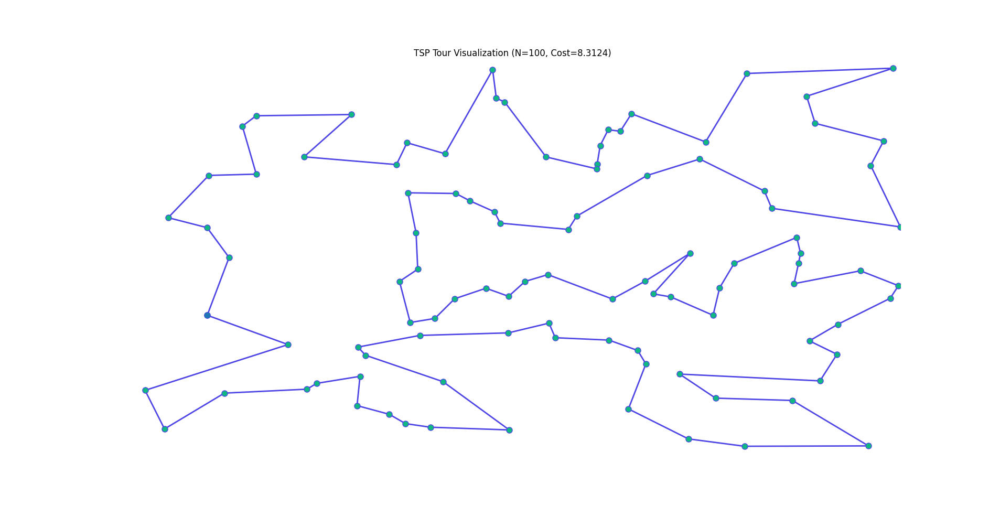
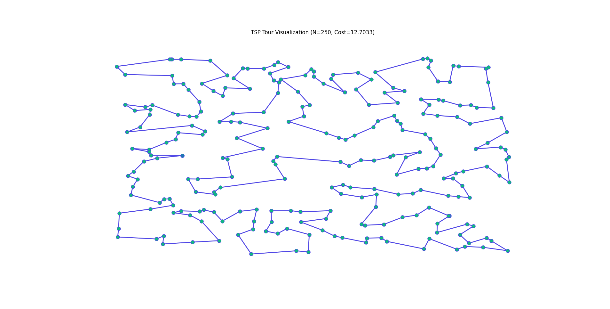
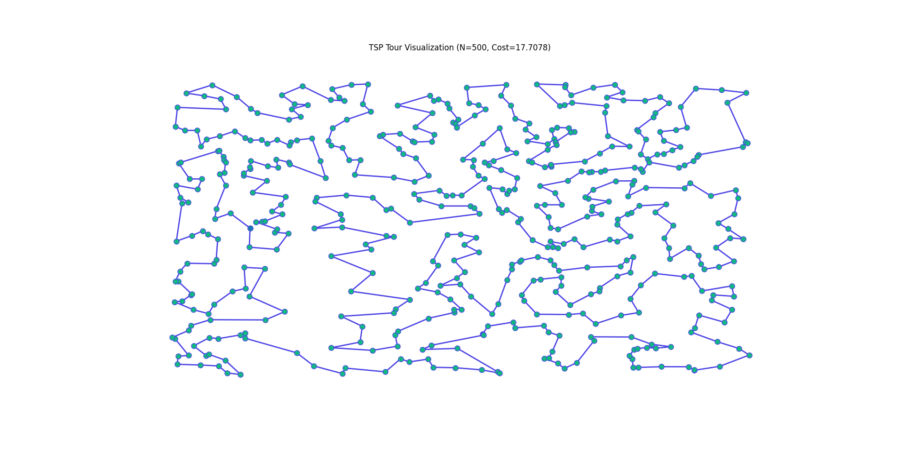

Reinforcement Learning for Combinatorial Optimisation
Posted on Sun 02 November 2025 in Machine Learning,
Read time: 14 minutes
The Problem: TSP
The Traveling Salesperson Problem (TSP) is one of the most famous combinatorial optimisation problems. It is incredibly easy to state: Given a list of cities and the distances between each pair, find the shortest route that visits each city exactly once and then returns to the first city.
Despite being easy to state, the TSP is NP-hard. The number of possible tours grows factorially, even with just 20 cities, the number of tours that are possible is \(2.4\times10^{18}\). This explosion in the number of possible routes is exactly why this problem is interesting, and hard.
This post is going to talk about various approaches to picking a good, or even the best tour from the \(n!\) possible tours, with a light introduction to some, and then a reinforcement learning approach that I have implemented and will emperically demonstrate the quality of.
Classical Approaches
Classical methods for tackling the TSP fall into three main categories, each with different trade offs between solution quality and computational efficiency.
Linear Programming and Exact Methods
Exact algorithms, often based on solving constrained Integer Linear Programs, guarantee the globally optimal solution. One of the primary formulations is the Dantzig-Fulkerson-Johnson model, which uses binary decision variables, \(x_{ij}\in\{0,1\}\), where \(x_{ij}=1\) if the edge from city \(i\) to city \(j\) is part of the tour, and \(0\) otherwise.
The objective is to minimise the total tour length
where \(c_{ij}\) is the cost of going from city \(i\) to city \(j\).
This objective is subject to three constraints, in two classes: 1. Depature/Arrival Constraints: Each city must be entered and exited exactly once:
2. Subtour Elimination Constraints: This constraint ensures there is only a single cycle, rather than multiple, disjoint cycles.
Since the number of possible subtours is exponential, these constraints are typically added dynamically.
While having fantastic guarantees, methods of this kind are horribly slow, becoming computationally infeasible for even moderately sized instances.
Advantages
- Guaranteed optimality
- Based on solid, well-defined mathematics
Disadvantages
- Computationally intractable for even moderate sized instances
Heuristics
Heuristics are typically polynomial time algorithms that aim to build a high quality solution, and don't offer optimality guarantees, although some do give bounds on the optimality gap.
-
Constructive Heuristics: These are often very fast, but often produce poor results. An example is the nearest neighbour algorithm. It works by randomly picking a starting vertex, and then the next vertex in the sequence is just the nearest vertex that hasn't already been visited.
-
Local Search Heuristics: Theses take some initial tour, such as what is generated by a constructive heuristic, and improve the tour. The search procedure guarantees the tour cost will not increase in a single pass, but it does not guarantee stopping at the global optimal solution, but rather a local optimum.
- 2-opt: The tour is improved by selecting two, non-adjacent edges \((i,j)\) and \((m,n)\), and replacing them with a different pair of edges, typically \((i, m)\) and \((j, n)\), provided this decreases the total tour length. 2-opt runs in \(O(N^2)\) per pass. There are different strategies to picking when to stop a pass. One approach might be to stop as soon as an improving move is found. Another approach is to find all improving moves, and then commit to the best one.
- 3-opt: This selects three edges and considers all seven of the non-trivial ways to reconnect the three resulting segments. This is much better at escaping local optima than 2-opt, but it does run in \(O(N^3)\) time.
- Lin-Kernighan: This is an incredibly effect k-opt heuristic that is considered to be the best practical algorithm for the TSP. It performs a sequence of swpas that may temporarily increase the cost, allowing it to escape local minima. A very large drawback to it is the complexity required to implement it efficiently.
Advantages
- Speed: Heuristics are typically quite cheap to run, especially the more simple ones like 2-opt and the constructive heuristics.
- Simplicity: A lot of heuristics are simple to understand and implement
Disadvantages
- No Global Guarantees: Local optima are guaranteed, but not the global optima
- Solution Dependence: Local searches often depend on the initial tour provided.
Metaheuristics
Metaheuristics employ high level strategies to explore solution spaces more effectively than a simple local search, aiming for better solutions, but again without optimality guarantees. They are designed to escaple local optima, which is a major limitation of the pure k-opt heuristics, by occasionally accepting worse moves. There are a number of powerful metahuristics, such as Tabu Search, Genetic Algorithms, and Simulated Annealing, which I will go into more detail on.
Simulated Annealing (SA)
Simulated annealing is traditionall a probabilitic metaheuristic inspired by the metallurgical process of annealing, where a material is heated and cooled slowly to increase the crystal size and reduce defects. As it applies to optimisation, the "temperature" controls the probability of accepting a move that increases the tour cost.
At a high temperature (\(T\)), the algorithm is extremely explorative, and frequently accepts worse solutions, allowing the algorithm to move across the search space. As the temperature decreases according to a cooling schedule (such as exponential or linear decay), the probability of moving to a worse state drops, and the algorithm will resemble a local search.
The probability of accepting a worse move depends on what is called the energy (\(E\)) of the system, and is typically the function that is being optimised, in the case of the TSP, the tour length. The acceptance probability is defined by the Metropolis Criterion
This controlled acceptance of bad moves makes SA an effective, general purpose method for finding high quality solutions to many combinatorial problems, and is particularly good for the TSP. It's performce is quite sensitive to the chosen cooling schedule though, so it does require some hyperparameter tuning for each application.
It is also worth noting that there is a deterministic version of SA that is equivalent, and in my experience, is typically what is actually implemented, as it is both easier to implement, and easier to reason about in debugging stages.
Advantages
- High Quality: Generally finds high quality solutions, typically close to optimal
- Exploration: Able to reliably escape local optima early in the process
- Robust: Less sensitive to initial solutions
Disadvantages
- Tuning: Performance is sensitive to hyperparameter tuning
- Speed: Slower than simple heuristics
Machine Learning Approaches
Machine learning gives new approaches for solving complex combinatorial problems. Instead of hard coding an optimisation strategy, a model learns the strategy from either data or experience.
The rest of this blog post is going to focus on my personal approaches to generating tours for the TSP problem, combining ideas from machine learning and heuristics. As I've worked on models and they have improved, metaheuristics have proved to be overkill. I have no practical experience with solving the TSP with a supervised learning approach, but have included a section for completeness. I have focused purely on reinforcement learning approaches.
Supervised Learning
In a supervised approach, a model is trained to reproduce the output of an optimal, or near optimal solver such as Lin-Kernighan. This is normally done using cross entropy loss to match the probability distribution of the expert's next edge to add to a tour.
While conceptually relatively simple, this method suffers from some major technical shortcomings that make it inferior to an RL approach for combinatorial optimisation.
- Poor Generalisation and Scalability: The trained input-output mapping is heavily dependent on the specific number of vertices in the training data. The model learns fixed patterns that struggle to generalise to problem instances with a larger, or even slightly different number of verties than those through the training set
- Exposure Bias and Compounding Errors: The model is exclusively trained on ground truth, optimal sequences generated by the expert. However, during inference, if the model makes a suboptimal move early on, the subsequent input context immediately becomes out of distribution. Because the model was never trained on these states, the performance will rapidly degrade, leading to errors that compound more and more, giving a terrible quality for the completed tour.
It's mostly for these two reason that the consensus in the field is that RL outperforms supervised learning for the TSP and similar combinatorial optimsation problems, particularly for generalisation.
Advantages
- Training Speed: Quick convergence and simple implementation using standard cross entropy loss
- Data Efficiency: Effective when a vast amount of high-quality expert data is available for a single problem size
Disadvantages
- Exposure Bias: Prone to compounding errors during inference when it deviates from the expert's path
- Poor Generalisation: Fails to generalise to instances with a different number of vertices
- Mimicry: Cannot generate solutions better than the expert it was trained on
Reinforcement Learning (RL)
The RL approach frames the TSP as a sequential decision making process. The model acts as an agent that selects the next city at each step to construct the final tour. The following define the RL setup:
- Agent: A pointer network is what I have used as it can process a variable length sequence of cities and select one of them as the next step
- Environment: The current state of the tour
- Reward: The negative of the final tour length, where we are maximising the reward
Pointer Network Architecture
The pointer network is an encoder-decoder with attention. It is designed for solving sequence-to-sequence problems, where the outpu sequence is a set of indices from the input sequence.
Encoder
The model embeds the raw \(N\) vertex coordinates \(x_i\in\mathbb{R}^2\) into a high dimensional space. This initial embedding is then fed through several layers of a standard transformer encoder.
The core of the encoder is a multi-head attention mechanism, which allows the model to understand the relationship between all cities simultaneously. This process generates a contextual embedding for every vertex \(i\), encoding its importance and relationship to all other vertices in the instance.
Decoder
The decoder is an LSTM-based recurrent unit, which is responsible for generating the tour sequentially. At each decoding step, \(t\), the hidden state \(h_t\) is updated, with the input being the embedding of the previously selected vertex, \(e_prev\). The hidden state \(h_t\) forms the query vector for the attention mechanism.
Attention Mechanism
The decoder's hidden state \(h_t\) queries all encoded city embeddings, \(e_i\). This generates the unnormalised logit scores, \(u_t^i\), that indicate the preference for selecting city \(i\) as the next action \(a_t\). A tanh-based attention mechanism is used:
where \(\mathbf{v}\), \(\mathbf{W_{\text{ref}}}\), and \(\mathbf{W_{\text{query}}}\) are learnable parameters.
Constraint Masking
While this is not required, it drastically speeds up training, and makes the reward function simple, rather than requiring a penalty for an incomplete tour. The raw logits, \(u_t\) get filtered to ensure that only unvisited vertices can be selected. The mask is applied before the final softmax.
Policy Gradient Training using REINFORCE
The agent is trained using the REINFORCE algorithm, which directly optimises the expected reward. The objective is to maximise
where \(\tau\) is the tour sequence generated by the policy \(\pi\) and \(R(\tau)=-L(\tau)\) is the negative tour length.
The gradient is approximated using Monte Carlo sampling:
EMA Baseline (\(B_t\))
The term \(B_t\) is a learned baseline, and in this case is just an exponential moving average of the rewards, which is used to reduce the high variance of the gradient estimates, without introducing bias. The advantage term, \(R(\tau_b)-B_t\), only updates the policy for tours that perform better than the historical average, leading to more stable training. The baseline is defined by
when \(t>0\), and just \(B_t=R_{\text{mean}}\) for the first iteration.
Hyperparameter Discussion
A batch size of 64 was used, and 10000 epochs were ran. The learning rate was fixed at 0.0005, and the model was trained on 100 vertex instances only.
Some simple improvements to this setup would involve decaying the learning rate over time, training on a variable instance size, and training longer.
In a different, but related model that also solves the TSP, I have introduced a second model to the training process that generates instances as well. Due to time constraints, I have not done that here, but it proved effective, especially at generalising outside of the standard way to generate instances, which is to just sample uniformly in the unit square until the desired number of vertices are obtained. This second model does pose challenges though with one, or both models, degrading into a collapsed state.
Inference
Instead of sampling over the logits, an argmax is used at inference time. I also combine the pointer network, and a naive 2-opt was performed to fix any local issues, implemented in python.
Results
For a 100 vertex instance we obtain the following, in roughly 1 second. About half the time was spent in the pointer network computation, and half in the 2-opt.

For a 250 vertex instance, we obtain the following, in roughly 6 seconds. About 0.7 seconds was spent in the pointer network computation.

And for a 500 vertex instance, we obtain the following, in roughly 15 seconds. About 0.9 seconds was spent in the pointer network computation.

One obvious way to improve the runtime performce is to implement even the naive 2-opt in a lower level language. The model does not readily export to a format that can be ran easily in a language like Rust though, so I have forgone that for now. I could also use a better 2-opt algorithm, rather than the naive implementation I have gone for.
As for the actual solutions that are generated, they are of high quality, especially given the time. I have not benchmarked them against other methods, such as simulated annealing or more simple constructive methods. But I have had experience benchmarking the other model against those approaches, and my gut tells me these solutions are of similar quality to the previous model I've developed. I do endevour to do this benchmarking at a later date, and will likely write a detailed post about that benchmarking too.
Future Work
While REINFORCE with an EMA baseline provides a good foundation, there are more robust ways to train models like this.
Advanced Policy Optimisation
A limitation of REINFORCE is its high gradient variance. Replacing it with an off-policy RL algorithm would make training more stable, and likely increase convergence speed. There are two primary avenues
- Actor-Critic: Directly train a separate critic network to learn the state value, rather than using an EMA as a baseline, which should dramatically reduce the variance in the advantage estimate.
- Proximal Policy Optimisation: Use a clipped objective function to constrain policy updates, which will prevent large and often destructive steps allowing for better data reuse.
Integration of Heuristics
The current approach uses 2-opt only after the model generates a full tour. Two possible ways to incorporate learning into the heuristics are:
- Neural Guidance: Swap to a 3-opt approach, and use the model's attention scores and predicted probabilities to bias the 3-opt heuristic to prioritise swaps
- Graph Coarsening: For large instances, allow a model to learn to identify local clusters of vertices first, and solve those clusters, before solving the higher level TSP
Hierarchical Attention
To approach much larger instances, with thousands of vertices rather than hundreds, and to overcome the \(O(N^2)\) complexity of the attention mechanism currently a hierarchical attention mechanism can be used by decomposing the attention processes into local and global attention, which would allow for reducing the complexity from quadratic to log-linear.